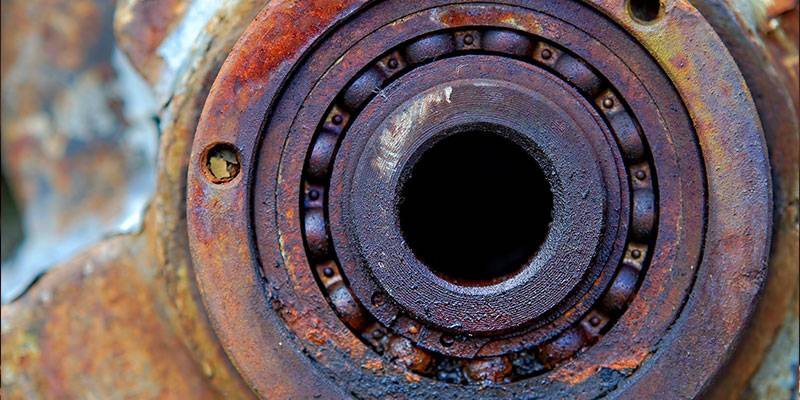
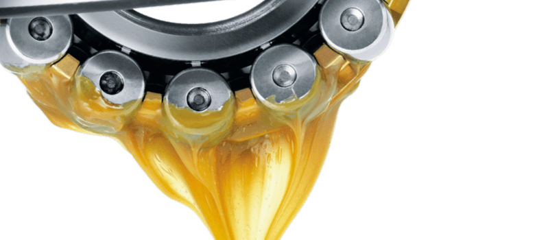

Lubrificação
Sistemas de lubrificação industrial
Qual é o objetivo da Lubrificação?
A lubrificação é um processo fundamental para garantir o bom funcionamento e a longevidade dos equipamentos industriais. O objetivo principal da lubrificação é reduzir o atrito entre as superfícies em contato, minimizando o desgaste e prevenindo falhas mecânicas. Além disso, a lubrificação também ajuda a dissipar o calor gerado pelo movimento das peças, protegendo os componentes contra o superaquecimento.
Rolamento com desgaste

Onde é utilizado a lubrificação?
A lubrificação é amplamente utilizada em diversos setores da indústria, incluindo a manufatura, automotiva, aeroespacial, petroquímica e muitas outras. Ela é essencial para o funcionamento de máquinas e equipamentos como motores, engrenagens, rolamentos, compressores e sistemas hidráulicos. A lubrificação adequada é crucial para garantir a eficiência operacional, reduzir os custos de manutenção e prolongar a vida útil dos equipamentos.
Tipos de lubrificação:

Existem diversos tipos de lubrificação utilizados na indústria, cada um adequado para diferentes aplicações e condições de operação. Os principais tipos de lubrificação incluem:
- Lubrificação por óleo: Utiliza óleos lubrificantes para reduzir o atrito e proteger os componentes. É amplamente utilizada em motores, engrenagens e rolamentos.
- Lubrificação por graxa: Utiliza graxas lubrificantes, que são mais espessas que os óleos, para aplicações onde a lubrificação por óleo não é adequada, como em rolamentos de alta carga.
- Lubrificação por ar: Utiliza ar comprimido para criar uma camada de lubrificação entre as superfícies em contato. É utilizada em aplicações de alta velocidade e baixa carga.
- Lubrificação por filme sólido: Utiliza materiais sólidos, como grafite ou dissulfeto de molibdênio, para criar uma camada de lubrificação entre as superfícies. É utilizada em condições extremas de temperatura e pressão.
Óleos minerais:
Derivados do petróleo, são os lubrificantes mais comuns e econômicos. São adequados para uma ampla gama de aplicações, mas podem não ser adequados para condições extremas.Óleos sintéticos:
Fabricados a partir de compostos químicos, oferecem melhor desempenho em condições extremas de temperatura e pressão. São mais caros que os óleos minerais, mas proporcionam maior proteção e eficiência.Óleos biodegradáveis:
Feitos a partir de fontes renováveis, como óleos vegetais, são uma opção mais sustentável para aplicações onde o impacto ambiental é uma preocupação.
Lubrificação por Óleo:
A lubrificação por óleo é um dos métodos mais comuns e eficazes para reduzir o atrito e proteger os componentes mecânicos. Os óleos lubrificantes são formulados com aditivos que melhoram suas propriedades, como resistência à oxidação, proteção contra desgaste e capacidade de suportar altas temperaturas. A escolha do óleo lubrificante adequado é crucial para garantir a eficiência operacional e a longevidade dos equipamentos.
Tipos de lubrificantes a óleo:
Exemplos:
Óleos hidraulico:
Utilizados em sistemas hidráulicos para transmitir energia e lubrificar os componentes do sistema.
Viscosidade comum : ISO VG 32 / 48 / 68
Uso em prensas, injetoras, maquinas industriais
Óleo para engrenagens (redutores)
Utilizados para lubrificar engrenagens e redutores, proporcionando proteção contra desgaste e corrosão.
Viscosidade comum : ISO VG 150 / 220 / 320 / 460
Uso em redutores, caixas de engrenagens, transmissões industriais
Possui aditivos EP (extrema pressão)
Óleo para compressores
Utilizados para lubrificar e resfriar os componentes internos de compressores, garantindo o bom funcionamento e a durabilidade do equipamento.
Viscosidade comum : ISO VG 32 / 46 / 68
Uso em compressores de ar, compressores de refrigeração, compressores industriais
Óleo para turbinas
Utilizados para lubrificar e resfriar os componentes internos de turbinas, garantindo o bom funcionamento e a durabilidade do equipamento.
Viscosidade comum : ISO VG 32 / 46 / 68
Uso em turbinas a gás, turbinas a vapor, turbinas industriais
Óleo para guias e barramentos
Utilizados para lubrificar guias e barramentos, proporcionando proteção contra desgaste e corrosão.
Viscosidade comum : ISO VG 68 / 150 / 220
Uso em guias de máquinas-ferramenta, barramentos de prensas, guias de equipamentos industriais
Óleo para rolamentos
Utilizados para lubrificar rolamentos, proporcionando proteção contra desgaste e corrosão.
Viscosidade comum : ISO VG 32 / 46 / 68
Uso em rolamentos de máquinas, rolamentos de equipamentos industriais
Óleo para correntes
Utilizados para lubrificar correntes, proporcionando proteção contra desgaste e corrosão.
Viscosidade comum : ISO VG 150 / 220 / 320, SAE 90 >> chain lube
Uso em correntes de transmissão, correntes de equipamentos industriais
Exemplos:
Óleos hidraulico:
Utilizados em sistemas hidráulicos para transmitir energia e lubrificar os componentes do sistema.
Viscosidade comum : ISO VG 32 / 48 / 68
Uso em prensas, injetoras, maquinas industriais
Óleo para engrenagens (redutores)
Utilizados para lubrificar engrenagens e redutores, proporcionando proteção contra desgaste e corrosão.
Viscosidade comum : ISO VG 150 / 220 / 320 / 460
Uso em redutores, caixas de engrenagens, transmissões industriais
Possui aditivos EP (extrema pressão)
Óleo para compressores
Utilizados para lubrificar e resfriar os componentes internos de compressores, garantindo o bom funcionamento e a durabilidade do equipamento.
Viscosidade comum : ISO VG 32 / 46 / 68
Uso em compressores de ar, compressores de refrigeração, compressores industriais
Óleo para turbinas
Utilizados para lubrificar e resfriar os componentes internos de turbinas, garantindo o bom funcionamento e a durabilidade do equipamento.
Viscosidade comum : ISO VG 32 / 46 / 68
Uso em turbinas a gás, turbinas a vapor, turbinas industriais
Óleo para guias e barramentos
Utilizados para lubrificar guias e barramentos, proporcionando proteção contra desgaste e corrosão.
Viscosidade comum : ISO VG 68 / 150 / 220
Uso em guias de máquinas-ferramenta, barramentos de prensas, guias de equipamentos industriais
Óleo para rolamentos
Utilizados para lubrificar rolamentos, proporcionando proteção contra desgaste e corrosão.
Viscosidade comum : ISO VG 32 / 46 / 68
Uso em rolamentos de máquinas, rolamentos de equipamentos industriais
Óleo para correntes
Utilizados para lubrificar correntes, proporcionando proteção contra desgaste e corrosão.
Viscosidade comum : ISO VG 150 / 220 / 320, SAE 90 >> chain lube
Uso em correntes de transmissão, correntes de equipamentos industriais